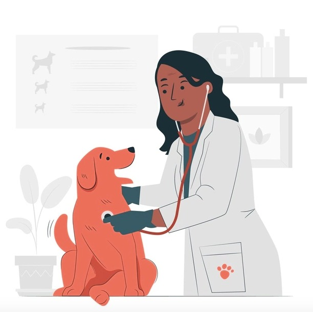

Welcome to VetChat!
Book an online appointment with a professional vet. Anytime. Anywhere
Browse experts and chat today.
Book a Vet



Book an online appointment with a professional vet. Anytime. Anywhere
Browse experts and chat today.